Contents
close all
clear
3.1 PMF for a single die
bin_edges = [0.5:6.5];
Ntrials = [120, 1200 12000 120000];
disp(' ');
disp('Section 3.1 PMF of a single fair die');
figure();
for ktrials = 1:length(Ntrials);
subplot(2,2,ktrials);
rolls = randi(6,1, Ntrials(ktrials));
sample_mean = mean(rolls);
sample_var = var(rolls);
hist_raw=histogram(rolls,'BinEdges',bin_edges);
hist_norm = histogram(rolls,'BinEdges',bin_edges,'Normalization','probability');
hold on;
yline(1/6, 'color', 'g', 'LineWidth', 3);
hold off;
xlabel('Number of dots');
ylabel('Probability');
axis([0 7 0 0.25]);
title(['Subplot ', int2str(ktrials), ': N = ', int2str(Ntrials(ktrials))]);
grid on
legend('Scaled histogram','Prob Mass Fnc (PMF)');
disp(['For ',int2str(Ntrials(ktrials)),' sample mean: ',num2str(sample_mean),' sample variance: ',num2str(sample_var)]);
end;
sgtitle('Section 3.1 N rolls of a fair die');
mean_th = 3.5;
var_th = 2.9167;
disp(['Theoretical mean = ',num2str(mean_th),' theoretical variance: ',num2str(var_th)]);
disp('-----------');
disp(' ');
Section 3.1 PMF of a single fair die
For 120 sample mean: 3.6417 sample variance: 2.9546
For 1200 sample mean: 3.5158 sample variance: 2.9806
For 12000 sample mean: 3.5202 sample variance: 2.926
For 120000 sample mean: 3.4952 sample variance: 2.9237
Theoretical mean = 3.5 theoretical variance: 2.9167
-----------
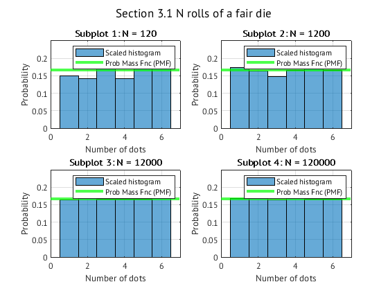
Section 3.2 PMF for binary strings
disp(' ');
disp('Section 3.2 PMF for Binary String');
n = 100;
Ntrials = [100 1000 10000];
p1 = [0.5 0.9 0.1];
bins_edges = [0.5:100.5];
outTable = zeros(length(Ntrials), length(p1));
for ktrials = 1:length(Ntrials)
random_numbers = rand(Ntrials(ktrials),100);
figure();
for kp = 1:length(p1)
subplot(3,1,kp);
work = (random_numbers<=p1(kp));
data = zeros(1,100);
for kn = 1:Ntrials(ktrials)
i1 = find(work(kn,:)==1);
if length(i1)==0
data(kn)=n+1;
else
data(kn)=min(i1);
end
end
hist_raw=histogram(data, 'BinEdges', bins_edges);
hist_norm=histogram(data, 'BinEdges', bins_edges, 'Normalization', 'probability');
k = (0:100);
theoretical_pmf = (1 - p1(kp)).^k * p1(kp);
hold on;
stem(k, theoretical_pmf);
hold off;
xlim([0 50]);
xlabel("Bits Until First 1 Appearance");
ylabel("Probability of First Appearance");
legend('Scaled histogram', 'Prob Mass Fnc (PMF)');
title(['Subplot ', int2str(kp), ': p = ', num2str(p1(kp))]);
sample_mean = mean(data);
sample_var = var(data);
pop_mean = 1/p1(kp);
pop_var = (1 - p1(kp)) / (p1(kp)^2);
disp(['For ', int2str(Ntrials(ktrials)), ...
' with p: ', num2str(p1(kp)), ', sample mean: ', ...
num2str(sample_mean), ' sample variance: ', num2str(sample_var), ...
' population mean: ', num2str(pop_mean), ...
' and population variance: ', num2str(pop_var)]);
values = [sample_mean, sample_var, pop_mean, pop_var];
sgtitle(['Section 3.2: Index of First Binary 1 in String for N = ', int2str(Ntrials(ktrials))]);
grid on;
end
end
disp('-----------');
disp(' ');
Section 3.2 PMF for Binary String
For 100 with p: 0.5, sample mean: 1.99 sample variance: 2.1312 population mean: 2 and population variance: 2
For 100 with p: 0.9, sample mean: 1.07 sample variance: 0.065758 population mean: 1.1111 and population variance: 0.12346
For 100 with p: 0.1, sample mean: 10.6 sample variance: 110.7677 population mean: 10 and population variance: 90
For 1000 with p: 0.5, sample mean: 2.037 sample variance: 1.8415 population mean: 2 and population variance: 2
For 1000 with p: 0.9, sample mean: 1.14 sample variance: 0.15656 population mean: 1.1111 and population variance: 0.12346
For 1000 with p: 0.1, sample mean: 10.106 sample variance: 83.1539 population mean: 10 and population variance: 90
For 10000 with p: 0.5, sample mean: 1.9964 sample variance: 1.9974 population mean: 2 and population variance: 2
For 10000 with p: 0.9, sample mean: 1.1089 sample variance: 0.12505 population mean: 1.1111 and population variance: 0.12346
For 10000 with p: 0.1, sample mean: 9.9726 sample variance: 88.0689 population mean: 10 and population variance: 90
-----------
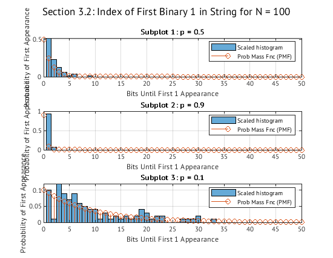 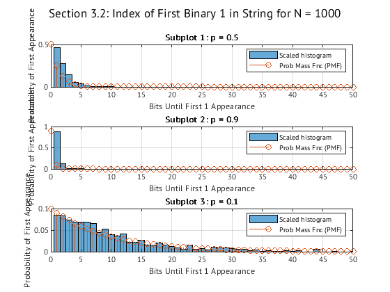 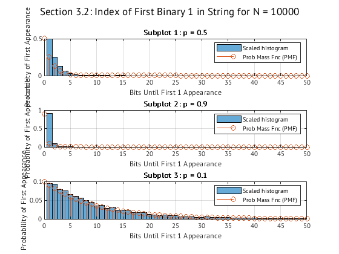
Section 3.3 exponentially distributed
disp(' ');
disp('Section 3.3 Exponentially Distributed');
Ntrials = [10 1000 100000];
lambda = 0.5;
theory_m = 1/lambda;
theory_v = 1/(lambda^2);
for ktrials = 1:length(Ntrials)
figure();
bins_edges = [0.5: 20.5];
data = randx(1,Ntrials(ktrials),lambda);
hist_raw = histogram(data, 'BinEdges', bins_edges);
hist_norm = histogram(data, 'BinEdges', bins_edges, 'Normalization', 'pdf');
k = (0:20);
theoretical_pdf = lambda * exp(-lambda * k);
hold on;
plot(k, theoretical_pdf);
hold off;
sample_mean = mean(data);
sample_var = var(data);
xlabel('Input');
ylabel('Probability');
title(['Section 3.3: N = ', int2str(Ntrials(ktrials)), ' Probability Density Function']);
legend('Scaled Histogram', 'Theoretical Prob Density Fnc (PDF)');
disp(['For N = ', int2str(Ntrials(ktrials)), ...
', sample and population mean are ', num2str(sample_mean), ...
' & ', num2str(theory_m), ...
' with sample and population variance ', num2str(sample_var), ...
' & ', num2str(theory_v)]);
end;
disp('-----------');
disp(' ');
Section 3.3 Exponentially Distributed
For N = 10, sample and population mean are 2.1958 & 2 with sample and population variance 4.6434 & 4
For N = 1000, sample and population mean are 1.8922 & 2 with sample and population variance 3.7739 & 4
For N = 100000, sample and population mean are 2.0025 & 2 with sample and population variance 4.0252 & 4
-----------
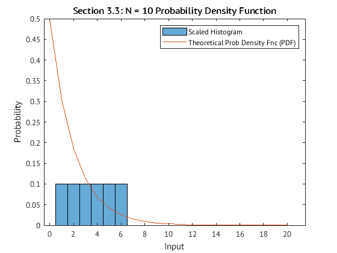 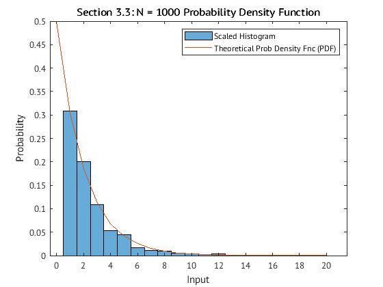 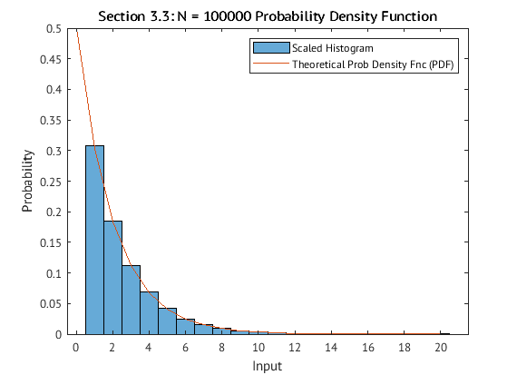
Section 3.4 N(0,1)
disp(' ');
disp('Section 3.4 Samples from N(0,1)');
Ntrials = [10 1000 100000];
theory_m = 0;
theory_v = 1;
for ktrials = 1:length(Ntrials)
figure();
bin_edges = [-10.5:10.5];
data = randn(1,Ntrials(ktrials));
hist_raw = histogram(data, 'BinEdges', bin_edges);
hist_norm = histogram(data, 'BinEdges', bin_edges, 'Normalization', 'pdf');
b = (-10:10);
pdf = exp(-(b-theory_m).^2/(2*theory_v))/sqrt(2*pi*theory_v);
hold on;
plot(b, pdf);
hold off;
xlabel('Input');
ylabel('Density of Distribution');
title(['Section 3.4 N = ', num2str(Ntrials(ktrials)), ' Gaussian Probability Density Function']);
legend('Scaled Histogram', 'Theoretical Prob Density Fnc (PDF)');
sample_m = mean(data);
sample_v = var(data);
disp(['For N = ', num2str(Ntrials(ktrials)), ...
' sample mean and variance are ', num2str(sample_m), ...
' & ' , num2str(sample_v)]);
end;
disp(['Theoretical mean and variance ', num2str(theory_m), ' & ', num2str(theory_v)]);
disp('-----------');
disp(' ');
Section 3.4 Samples from N(0,1)
For N = 10 sample mean and variance are 0.075549 & 0.56946
For N = 1000 sample mean and variance are 0.0096594 & 0.97414
For N = 100000 sample mean and variance are 0.0012593 & 0.99711
Theoretical mean and variance 0 & 1
-----------
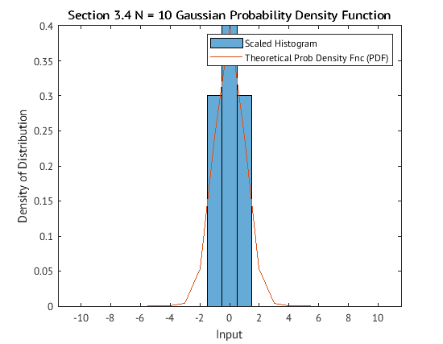 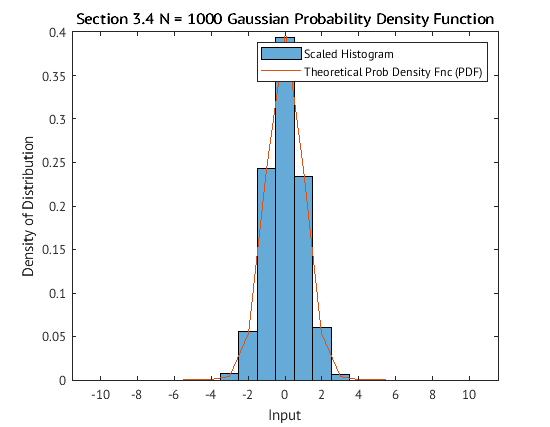
Section 3.5 N(-2,9)
disp(' ');
disp('Section 3.5 Samples from N(-2,9)');
Ntrials = [10 1000 100000];
theory_m = -2;
theory_v = 9;
for ktrials = 1:length(Ntrials)
figure();
bin_edges = [-15.5:15.5];
data = sqrt(theory_v)*randn(1,Ntrials(ktrials))+theory_m;
hist_raw = histogram(data, 'BinEdges', bin_edges);
hist_norm = histogram(data, 'BinEdges', bin_edges, 'Normalization', 'pdf');
b = [-15:15];
pdf = exp(-(b-theory_m).^2/(2*theory_v))/sqrt(2*pi*theory_v);
hold on;
plot(b, pdf);
hold off;
xlabel('Input');
ylabel('Density of Distribution');
title(['Section 3.4 N = ', num2str(Ntrials(ktrials)), ' Gaussian Probability Density Function']);
legend('Scaled Histogram', 'Theoretical Prob Density Fnc (PDF)');
sample_mean = mean(data);
sample_var = var(data);
disp(['For N = ', num2str(Ntrials(ktrials)), ...
' sample mean and variance are ', num2str(sample_mean), ...
' & ' , num2str(sample_var)]);
end;
disp(['Theoretical mean and variance ', num2str(theory_m), ' & ', num2str(theory_v)]);
disp('-----------');
disp(' ');
Section 3.5 Samples from N(-2,9)
For N = 10 sample mean and variance are -2.476 & 13.6932
For N = 1000 sample mean and variance are -2.0988 & 8.3816
For N = 100000 sample mean and variance are -2.0027 & 8.9711
Theoretical mean and variance -2 & 9
-----------
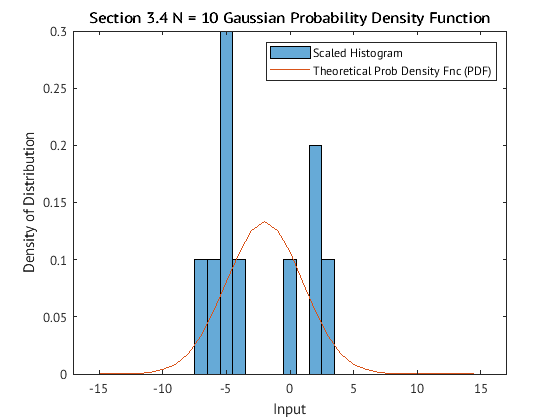 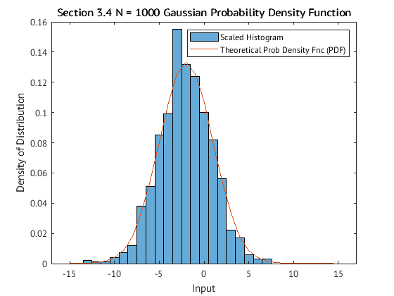 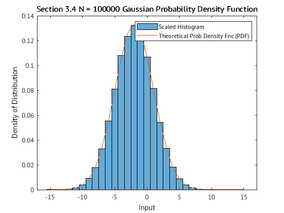
Section 3.6
disp(' ');
disp(['Section 3.6 Computing Probabilities from PDF']);
Ntrials = [10 1000 100000];
theory_m = -2;
theory_v = 9;
data = sqrt(theory_v)*randn(1,Ntrials(3))+theory_m;
bin_edges = [-15.5:15.5];
hist_raw = histogram(data, 'BinEdges', bin_edges);
ix = find((hist_raw.BinEdges >= -5) & (hist_raw.BinEdges <= 1));
raw_sum = sum(hist_raw.Values(ix));
raw_prob = raw_sum / Ntrials(3);
hist_norm = histogram(data, 'BinEdges', bin_edges, 'Normalization', 'pdf');
ix = find((hist_norm.BinEdges >= -5) & (hist_norm.BinEdges <= 1));
norm_prob = sum(hist_norm.Values(ix));
disp(['Section 3.6 N = ', int2str(Ntrials(3)), ' with probability of [-5, 1] (raw): ', num2str(raw_prob), ' and (norm): ', num2str(norm_prob)]);
mu = theory_m;
var = theory_v;
func = @(x) (1/sqrt(2*pi*var)) * exp(-(x - mu).^2 / (2 * var));
q = integral(func, -5, 1);
disp(['Numerical integration of PDF: ', num2str(q)]);
Section 3.6 Computing Probabilities from PDF
Section 3.6 N = 100000 with probability of [-5, 1] (raw): 0.67639 and (norm): 0.67639
Numerical integration of PDF: 0.68269
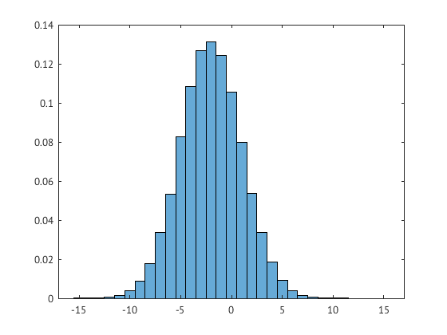